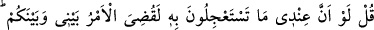
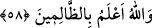

57. De ki: Şüphesiz ben Rabbimden gelen apaçık bir delile dayanıyorum. Siz ise
onu yalanladınız. Çabucak gelmesini istediğiniz (azap) benim yanımda değildir.
Hüküm ancak Allah’ındır. O hakkı anlatır ve O, doğru hüküm verenlerin en
hayırlısıdır.
“De ki: “Ben, Rabb’imden” gelen “açık bir delil üzereyim.” Beyyine, hak ve bâtılı
birbirinden ayıran açık delildir. Bir konuda açık bir delili ve doğru bir şâhidi olan
kimse: “Ben bu konuda kesinlikle emînim.” der. Âyette beyyine ile Kur’an ve vahiy
kastedilmiştir.
“Siz ise onu yalanladınız.” Bu cümle, başlangıç cümlesidir. Bahsedilen hususu haber
vermek için getirilmiştir. Manası şöyledir: Ben, Rabbimden gelen büyük ve açık bir
delil üzereyim. Siz ise onu ve ondaki haberleri yalanladınız. Bu haberlerden biri de
azabın geleceğine dâir tehdittir.
“Acele istediğiniz (azab) da benim yanımda değildir.”
Rivayete göre Kureyş’in ileri gelenleri, alay etmek ya da Peygamber (a.s.)’ı
susturmak için “Eğer doğru söylüyorsanız, bu tehdit (ettiğiniz azab) ne zaman
(gelecek)?” (Yâsîn, 36/48) diyerek azabı acele istiyorlardı. Hattâ Nadr b. Haris,
Ka’be’nin Hatim denilen kısmına gelerek: “Allahım, eğer bu senin katından gelen bir
gerçek ise, başımıza gökten taş yağdır yahut bize acı bir azab ver.” (el-Enfâl, 8/32)
demişti.
Âyetin manası şöyledir: Kur’ân’da vaad edilen gelmesini acele istediğiniz ve
gecikmesini beni yalanlamaya bahâne ettiğiniz azâb, benim hükmüm ve gücüm dâhilinde
değildir. Tâ ki onu getireyim ve doğruluğunu size göstereyim. Yani bu konu benim
yetkime bırakılmamıştır.
Bu konuda ve diğer hususlarda acele olarak getirmek ve geriye bırakmak hususunda
“hüküm vermek, yalnız Allah’a aittir.” Bu hususta benim hiçbir şekilde tesirim söz
konusu değildir.
O, “gerçeği anlatır.” gerçeği ve hakkı söyler. Bütün hükümlerinin beyanında hakkı
gözetir ve ancak hak ile hükmeder. İşte azabının tehiri de haktır, sabittir ve eşsiz
hikmetine göre cereyan etmektedir.
“Hükm”ün asıl anlamı, menetmek demektir. Bir bakıma hüküm, bâtılın hakka karşı
koymasına yahut hasmın hak sahibine zulmetmesine mani olur.
“Ve O, doğru hüküm verenlerin en hayırlısıdır.” Bu cümle, ayetin sonunda ek bir ara
cümlesidir. Önceki cümlenin muhtevasını desteklemekte ve burada özel olarak hakkın
anlatılmasının, hak ile bâtılı ayırd etmek olduğuna işaret etmektedir.